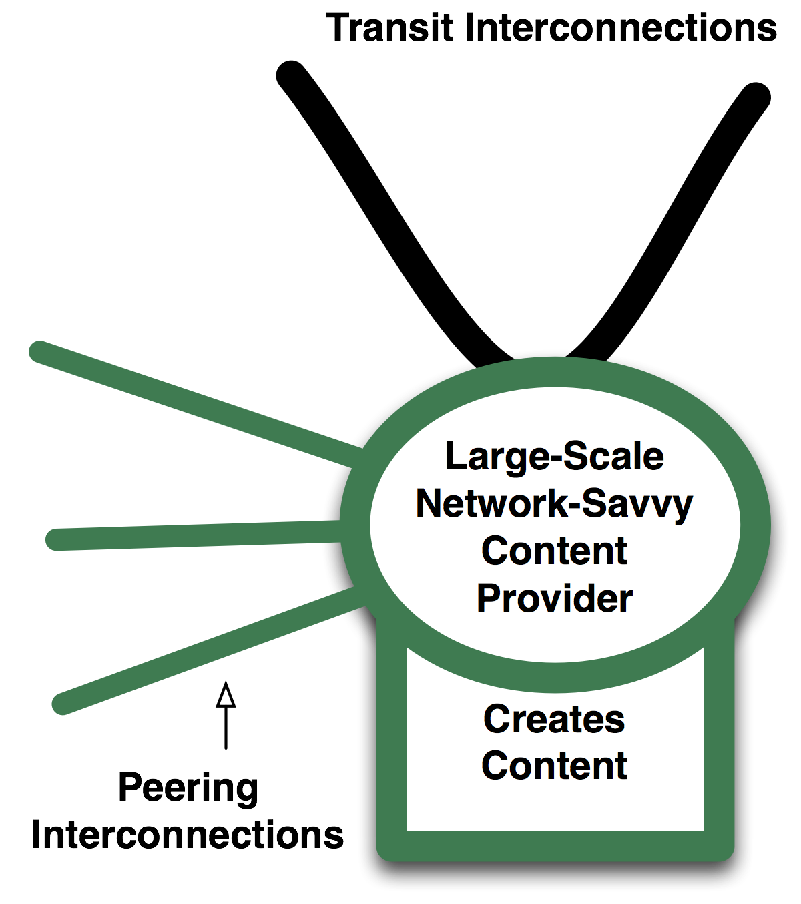
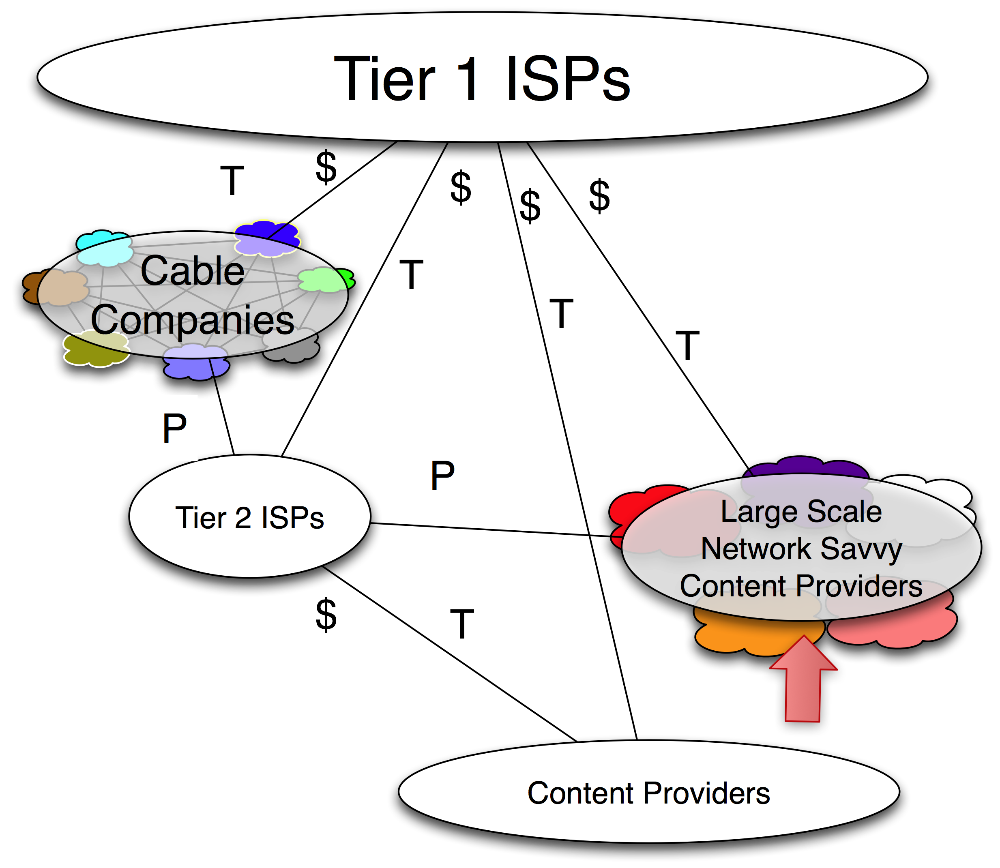

Evolution #2 – Large Scale Network Savvy Content Providers Peer
Around the same time, a small group of Large-Scale Network-Savvy Content Providers emerged as large volume peers.
Definition: A Large-Scale Network-Savvy Content Provider (LSNSCP) is a content provider that sees networking as strategic enough to build a backbone and peer.
Most of the LSNSCPs peer at least bi-coastally, and some peer more broadly across the country. The dominant three motivations to peer are similar to the Tier 2 ISP motivations to peer:
- To improve the end-user experience. Yahoo! for example sees the end-user experience as mission-critical. The company applies considerable resources monitoring (in real-time!) its application network performance characteristics. It identifies congestion, notes the network path, and alters its interconnections so that traffic traverses an alternative network path to improve the end-user experience. Around the world, this motivation is the #1 motivation that leads Content Providers to peer.
- To reduce transit costs. Any traffic that can be sent directly to the access-heavy (also called eyeball) network is traffic that doesn’t have to go over the metered transit connection. In a related way, e-mail service providers such as MSN HotMail and Yahoo! can exchange e-mail without incurring any transit charges.
- They needed to move to a new data center anyway. Many colocation and data centers were going out of business. Given the opportunity, some content players chose a data center where they could peer as well as buy transit in an open market.
Large-scale content players have always purchased transit to deliver their content to the end users on the Internet. Therefore, their role and behavior in the Peering Ecosystem is similar to the Tier 2 ISPs with the exceptions that Content Players:
- do not sell transit
- focus on content creation, and if they do operate a network it is for exactly one customer: themselves
- have visibility into the end-to-end performance characteristics (Tier 2 ISPs see packets, while LSNSCPs can see packets and flows)
The model for the Network-Savvy Large-Scale Content Provider is shown in Figure 10-3.

Figure 10-3. The Large-Scale Network-Savvy Content Provider model.
These players still purchase transit (generally from the Tier 1 ISPs), but they supplement it by peering openly with anyone and everyone.
Examples of these Large-Scale Content Players are Yahoo!, Google, Microsoft, Amazon, Walmart.com, Apple, Electronic Arts, and Sony Online.
This evolution represents a significant change to the Peering Ecosystem because:
- The volume of traffic being diverted to peering was huge, and it represented traffic that previously was sent through and available only from the Tier 1 ISPs.
- The LSNSCPs had an Open Peering Policy, and even actively promoted peering with them so this large amount of traffic would be freely available to peers.
- These leading players paved the way for other Large Scale Content Companies and Enterprise companies to examine Peering as a cost reducing / performance improving strategy.
We can see a graphic depiction of this evolution below in Figure 10-4.

Figure 10-4. The Large-Scale Network-Savvy Content Providers peer openly.